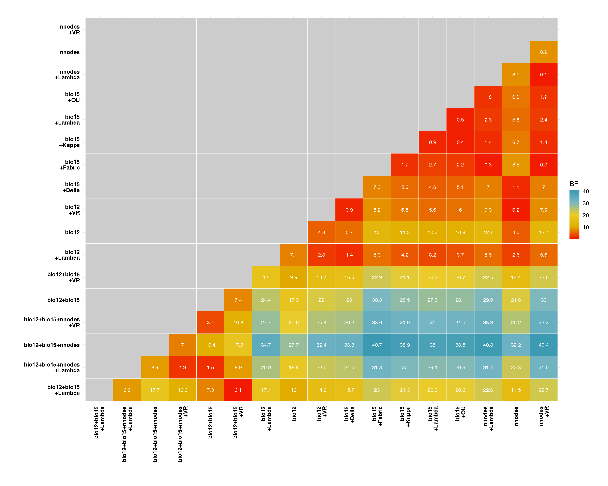
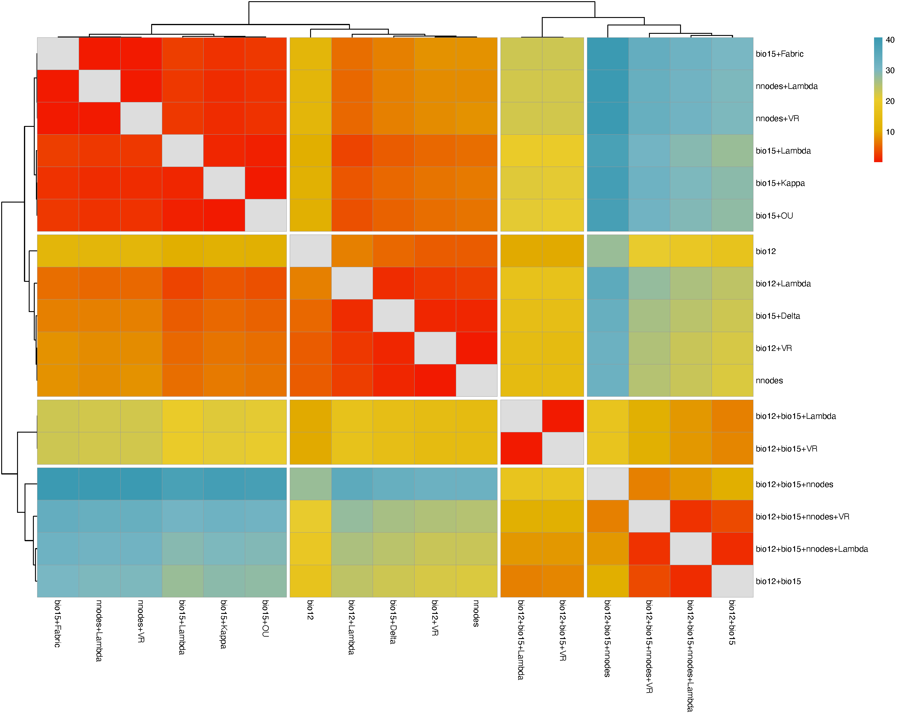
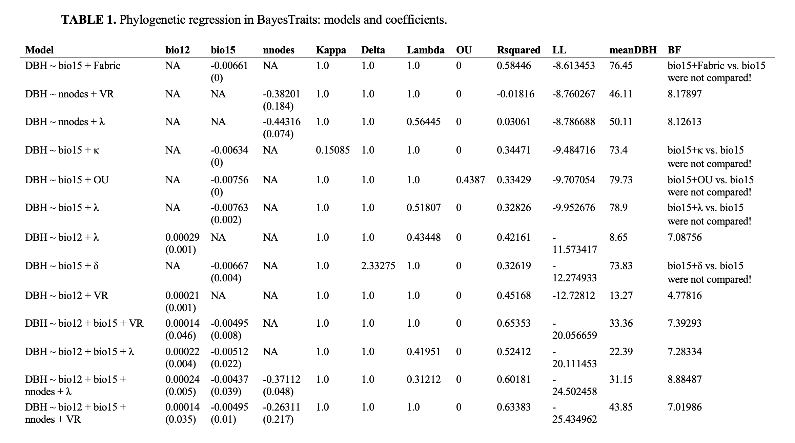

3. Processing output data from independent contrast regression analysis
Source:vignettes/articles/phyreg_outputs.Rmd
phyreg_outputs.Rmd
The main goal of the InNOutBT package is to readily
create input data and process output data for Meade & Pagel’s (2022)
BayesTraits
program.
Here we show how to use the package’s function
phyreg.outputs for processing all Log and Stones output
text files from BayesTraits phylogenetic independent contrast regression
analyses.
Setup
InNOutBT is not on CRAN yet, but you can install the latest development version from GitHub:
#install.packages("devtools")
devtools::install_github("DBOSlab/InNOutBT")Processing Log and Stones output files
The function phyreg.outputs reads and processes the Log
and Stones .txt output files resulting from the independent contrast
regression analyses and generates tables in Word or CSV format, which
summarize competing models and rank them by their log likelihood scores.
Heatmaps derived from pairwise Bayes Factors are generated in PDF format
and these can be used to identify competing models that are most similar
to the model with the highest log likelihood score.
library(InNOutBT)
phyreg.outputs(logst_dir = paste0(getwd(),"/BayesTraits_phyreg_outputs_log_stone"),
responvar = "DBH",
explanvar = c("bio12", "bio15", "nnodes"),
treetransf = c("Kappa", "Delta", "Lambda", "OU", "UNI", "VR", "Fabric"),
bayesfactor = TRUE,
unirates = FALSE,
outformat = c("Word", "CSV"),
tableleg = "Phylogenetic regression in BayesTraits",
dir_create = "results_BayesTraits_phyreg_output",
outfile = "BayesTraits_phyreg_output_table",
height = 12,
width = 15)
Heatmap including pairwise Bayes Factor comparisons:

Heatmap clustering models based on Bayes Factor values:

Table describing the models and coefficients:

See also the associated article on how to create
input files with phyreg.inputs for independent contrast
regression analyses, as well as another article on how to create a shell
script with phyreg.shell for the analysis of one or
multiple models.